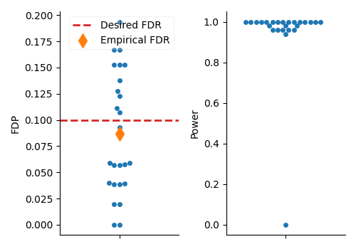
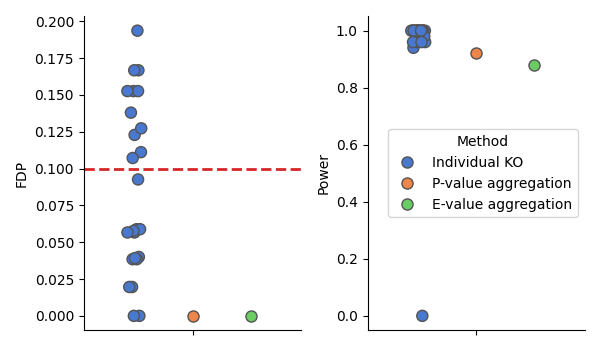
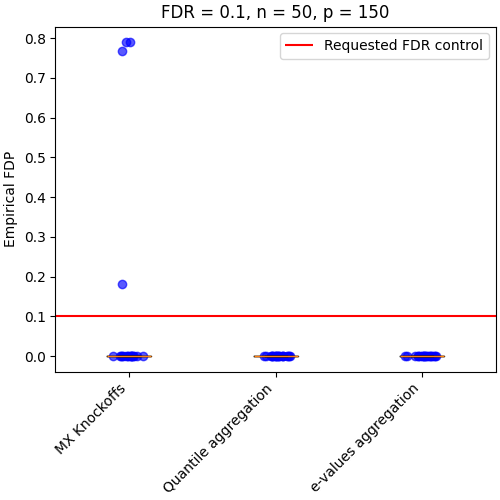
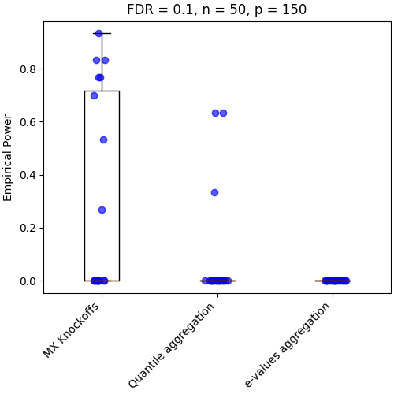

Note
Go to the end to download the full example code.
Knockoff aggregation on simulated data#
In this example, we show an example of variable selection using model-X Knockoffs introduced by Candes et al.[1]. A notable drawback of this procedure is the randomness associated with generating knockoff variables. This can result in fluctuations of the statistical power and false discovery proportion, and consequently, unstable inference.
This example exhibits the two aggregation procedures described by Nguyen et al.[2] and Ren and Barber[3] to derandomize inference.
Imports needed for this script#
from joblib import Parallel, delayed
import matplotlib.pyplot as plt
import numpy as np
from sklearn.linear_model import LassoCV
from sklearn.model_selection import KFold
from sklearn.utils import check_random_state
from hidimstat.knockoffs import (
model_x_knockoff,
model_x_knockoff_bootstrap_e_value,
model_x_knockoff_bootstrap_quantile,
model_x_knockoff_pvalue,
)
from hidimstat.statistical_tools.multiple_testing import fdp_power
from hidimstat._utils.scenario import multivariate_1D_simulation_AR
Data simulation#
The comparison of the three methods relies on evaluating the False Discovery Proportion (FDP) and statistical power. Assessing these metrics requires knowledge of the actual data-generating process. We therefore use simulated data with the following parameters:
# number of repetitions of the methods
runs = 20
# Number of observations
n_samples = 200
# Number of variables
n_features = 150
# Correlation parameter
rho = 0.4
# Ratio of number of variables with non-zero coefficients over total
# coefficients
sparsity = 0.2
# Desired controlled False Discovery Rate (FDR) level
fdr = 0.1
# signal noise ration
snr = 10
# number of repetitions for the bootstraps
n_bootstraps = 25
# seed for the random generator
seed = 45
# number of jobs for repetition of the method
n_jobs = 2
# verbosity of the joblib
joblib_verbose = 0
rng = check_random_state(seed)
seed_list = rng.randint(1, np.iinfo(np.int32).max, runs)
Define the function for running the three procedures on the same data#
def single_run(n_samples, n_features, rho, sparsity, snr, fdr, n_bootstraps, seed=None):
# Generate data
X, y, _, non_zero_index = multivariate_1D_simulation_AR(
n_samples, n_features, rho=rho, sparsity=sparsity, seed=seed, snr=snr
)
# Use model-X Knockoffs [1]
selected, test_scores, threshold, X_tildes = model_x_knockoff(
X,
y,
estimator=LassoCV(
n_jobs=1,
cv=KFold(n_splits=5, shuffle=True, random_state=0),
),
n_bootstraps=1,
random_state=seed,
)
mx_selection, _ = model_x_knockoff_pvalue(test_scores, fdr=fdr)
fdp_mx, power_mx = fdp_power(mx_selection, non_zero_index)
# Use aggregation model-X Knockoffs [2]
selected, test_scores, threshold, X_tildes = model_x_knockoff(
X,
y,
estimator=LassoCV(
n_jobs=1,
cv=KFold(n_splits=5, shuffle=True, random_state=0),
),
n_bootstraps=n_bootstraps,
n_jobs=1,
random_state=seed,
)
# Use p-values aggregation [2]
aggregated_ko_selection, _, _ = model_x_knockoff_bootstrap_quantile(
test_scores, fdr=fdr, adaptive_aggregation=True
)
fdp_pval, power_pval = fdp_power(aggregated_ko_selection, non_zero_index)
# Use e-values aggregation [3]
eval_selection, _, _ = model_x_knockoff_bootstrap_e_value(
test_scores, threshold, fdr=fdr
)
fdp_eval, power_eval = fdp_power(eval_selection, non_zero_index)
return fdp_mx, fdp_pval, fdp_eval, power_mx, power_pval, power_eval
Define the function for plotting the result#
def plot_results(bounds, fdr, n_samples, n_features, power=False):
plt.figure(figsize=(5, 5), layout="constrained")
for nb in range(len(bounds)):
for i in range(len(bounds[nb])):
y = bounds[nb][i]
x = np.random.normal(nb + 1, 0.05)
plt.scatter(x, y, alpha=0.65, c="blue")
plt.boxplot(bounds, sym="")
if power:
plt.xticks(
[1, 2, 3],
["MX Knockoffs", "Quantile aggregation", "e-values aggregation"],
rotation=45,
ha="right",
)
plt.title(f"FDR = {fdr}, n = {n_samples}, p = {n_features}")
plt.ylabel("Empirical Power")
else:
plt.hlines(fdr, xmin=0.5, xmax=3.5, label="Requested FDR control", color="red")
plt.xticks(
[1, 2, 3],
["MX Knockoffs", "Quantile aggregation", "e-values aggregation"],
rotation=45,
ha="right",
)
plt.title(f"FDR = {fdr}, n = {n_samples}, p = {n_features}")
plt.ylabel("Empirical FDP")
plt.legend(loc="best")
Define the function for evaluate the effect of the population#
def effect_number_samples(n_samples):
parallel = Parallel(n_jobs, verbose=joblib_verbose)
results = parallel(
delayed(single_run)(
n_samples, n_features, rho, sparsity, snr, fdr, n_bootstraps, seed=seed
)
for seed in seed_list
)
fdps_mx = []
fdps_pval = []
fdps_eval = []
powers_mx = []
powers_pval = []
powers_eval = []
for fdp_mx, fdp_pval, fdp_eval, power_mx, power_pval, power_eval in results:
fdps_mx.append(fdp_mx)
fdps_pval.append(fdp_pval)
fdps_eval.append(fdp_eval)
powers_mx.append(power_mx)
powers_pval.append(power_pval)
powers_eval.append(power_eval)
# Plot FDP and Power distributions
fdps = [fdps_mx, fdps_pval, fdps_eval]
powers = [powers_mx, powers_pval, powers_eval]
plot_results(fdps, fdr, n_samples, n_features)
plot_results(powers, fdr, n_samples, n_features, power=True)
plt.show()
Aggregation methods provide a more stable inference#
- 
- 
By repeating the model-X Knockoffs, we can see that instability of the inference. Additionally, we can see that the aggregation method is more stable. However, the e-values aggregation is more conservative, i.e. the exepect variables of importance is not find.
Limitation of the aggregation methods#
effect_number_samples(n_samples=50)
- 
- 
/home/circleci/project/.venv/lib/python3.13/site-packages/sklearn/linear_model/_coordinate_descent.py:695: ConvergenceWarning: Objective did not converge. You might want to increase the number of iterations, check the scale of the features or consider increasing regularisation. Duality gap: 2.994e-01, tolerance: 1.456e-01
model = cd_fast.enet_coordinate_descent(
/home/circleci/project/.venv/lib/python3.13/site-packages/sklearn/linear_model/_coordinate_descent.py:695: ConvergenceWarning: Objective did not converge. You might want to increase the number of iterations, check the scale of the features or consider increasing regularisation. Duality gap: 2.031e-01, tolerance: 1.456e-01
model = cd_fast.enet_coordinate_descent(
One important point of this method is that they require enough samples to estimate the distribution of each feature.
References#
Total running time of the script: (1 minutes 6.964 seconds)